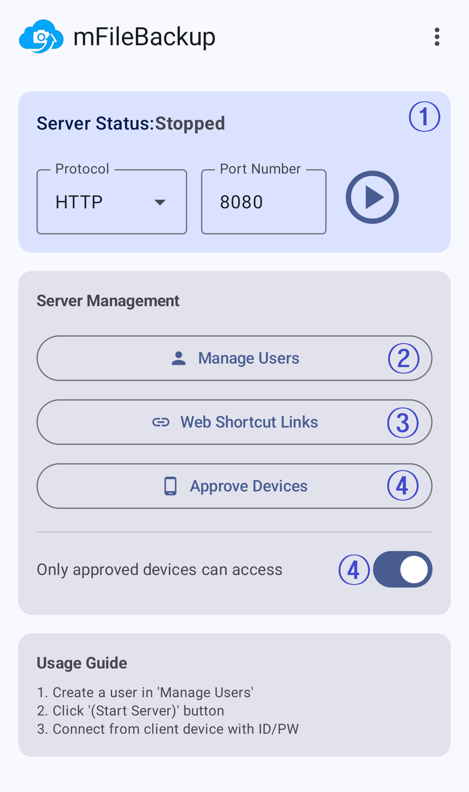

1
서버 상태
현재 서버 상태를 표시합니다. Stopped는 서버가 실행 중이지 않다는 뜻입니다. 프로토콜과 포트를 확인한 뒤 재생 버튼을 눌러 서버를 시작할 수 있습니다.
- 프로토콜에서 HTTP 또는 HTTPS 연결 방식을 선택합니다.
- 포트 번호는 클라이언트 기기가 연결할 때 사용하는 번호입니다.
- 서버를 시작하면 상태 표시가 실행 중 상태로 바뀝니다.

현재 서버 상태를 표시합니다. Stopped는 서버가 실행 중이지 않다는 뜻입니다. 프로토콜과 포트를 확인한 뒤 재생 버튼을 눌러 서버를 시작할 수 있습니다.
서버에 연결할 사용자의 계정을 관리합니다. 사용자별 아이디와 비밀번호를 만들고 필요한 권한을 설정할 수 있습니다.
(1)은 현재 등록된 사용자 수를 뜻합니다.사용자에게 공유한 웹 바로가기 링크를 관리합니다. 링크를 받은 사용자는 브라우저에서 해당 계정의 콘텐츠에 접근할 수 있습니다.
승인된 기기만 서버에 접속하도록 제한합니다. 버튼으로 승인 기기를 관리하고, 아래 스위치로 기능을 켜거나 끌 수 있습니다.
외부 네트워크에서 서버를 사용한다면 기기 승인을 켜서 승인된 기기의 접속만 허용하는 것을 고려하세요.